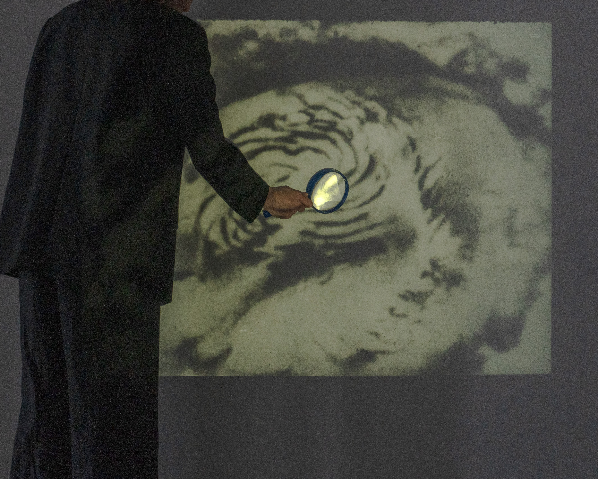
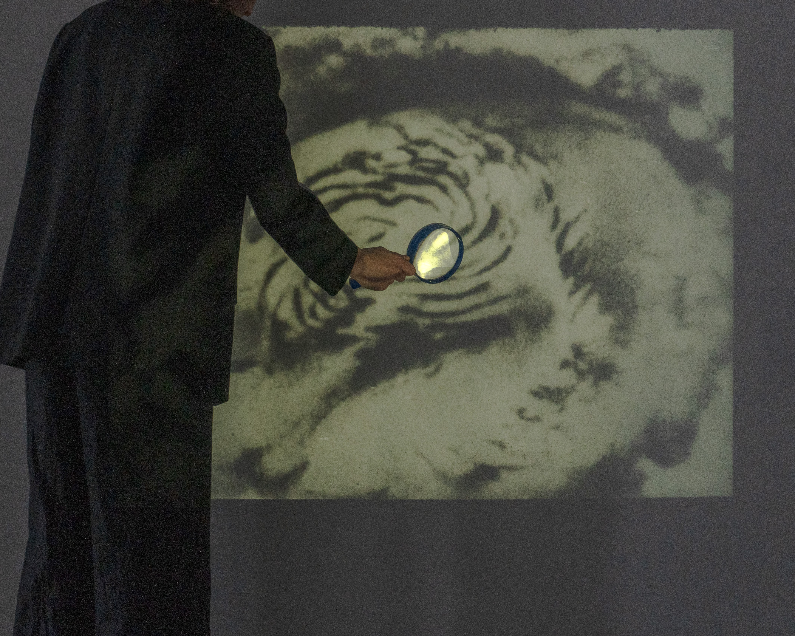

Optical Error
February - May | 2024
Keywords
disembodiment, glitch, backdrop, loss, aberration, coma, astigmatism, distortion, glazing, afterimage, identity conflict, catharsis, contradiction, hope, calmness.
Abstract
The theme is intended to lead to an exploration of the perspective of imaging through an analysis of the physical properties of light, optical errors and illusions as issues of reality simulation. The distortion expressed through the errors of representation becomes the key to unravelling a type of contradiction between experience and memory. At the same time, the possibilities of creating visual artefacts as images of a non-existent original will be explored in the context of reading an elusive reality. The image can be built on experimentation based on the definition of concepts involving mainly optical errors and anomalies such as aberration, coma, astigmatism, distortion, glazing, after-image, etc. The starting point of the topic should be the re-evaluation of imaging based on creative experimentation with optical errors. This is to be framed in content by reflecting on the issue of tolerance of identities, conflicts of coexistence also connected with possible personal emotional states of loss and emptiness.


Description
Optical Error emerges from a sustained inquiry into the nature of perception, identity, and visual disruption. At its core, the project investigates internal contradictions that arise from fragmented self-perception, particularly within the context of voluntary migration and cultural displacement. These internal tensions are rendered visible through the metaphor and materiality of optical distortion—errors not merely of vision, but of understanding, interpretation, and memory.

Informed by personal history and shaped through the language of visual media, the work draws on a lineage of scientific inquiry: the artist's familial background includes generations of physicists who frequently questioned the porous boundaries between scientific fact and speculative narrative. This epistemological tension—between empirical knowledge and mythic imagination—becomes a guiding framework for the visual exploration of identity as both a constructed and unstable phenomenon.
 

Navigating the Unseen: A Reflection on Simulations
Rather than seeking resolution or synthesis, the project stages encounters between the optical and the psychological. It examines how distortions of light can serve as analogues for cognitive and emotional fragmentation, suggesting that errors in perception may in fact offer privileged access to deeper layers of meaning. Montage, pseudo-archival material, and interactive visual environments serve as tools for reframing what is seen—and how it is seen—calling into question the authority of images and the assumptions they carry.
The installation invites the viewer into a participatory field of inquiry, where observation becomes entangled with interpretation. Through the interplay of authenticity and simulation, it constructs a space in which scientific curiosity merges with introspective resonance. The work does not present a singular narrative; rather, it accumulates fragments—optical, historical, emotional—that together form a shifting landscape of sense-making. In this way, Optical Error reflects on how realities are fabricated, destabilized, and reconstituted—both in the external world and within the self.